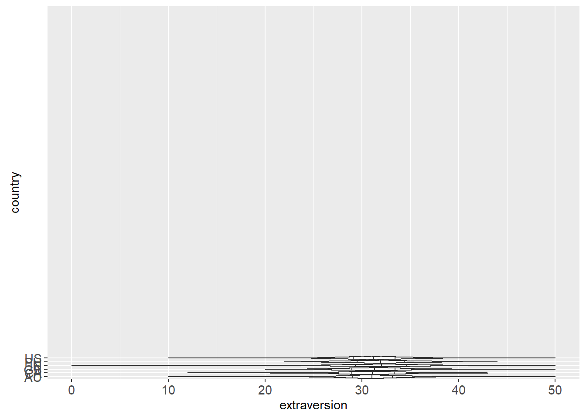
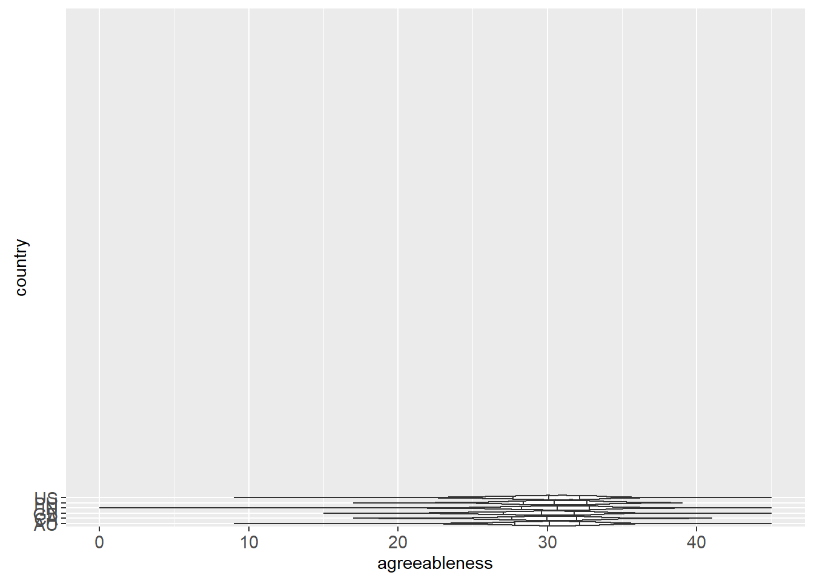
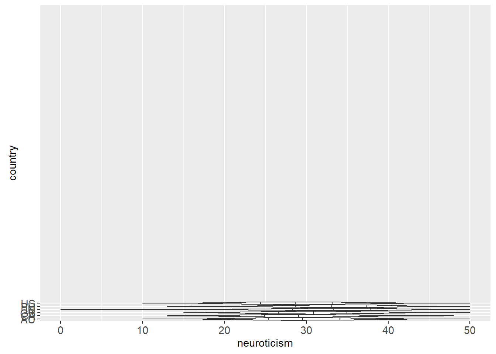
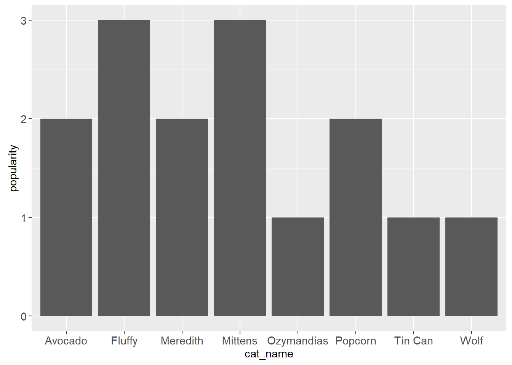

b5 <- read_tsv("b5.tsv",
show_col_types = FALSE)
go_away <- c("race", "age", "engnat", "gender", "hand", "source")
b5c <- b5 |> select(-any_of(go_away))animint2 GSOC Application
Introduction
Hello! If you’re reading this, you’re probably Toby Dylan Hocking, Faizan Khan, or someone else who’s applying to GSOC 2023. (And if you’re in latter group, best of luck!)
Why apply to GSOC for the R Project? I figured it would be a good way to improve my R skills and start contributing to something open source. I’ve used and relied on a lot of R packages for …
Why apply to work on animint2? I think interactive models and visualizations are important for exploratory science. Here’s an example from my domain of expertise. In network psychopathology, an interactive model of depression led to the discovery of hysteresis in symptom networks. It continues to be an important part of network theory.1
1 D. Borsboom. “A network theory of mental disorders.” World Psychiatry. 2017.
I’m never used animint2 before, but I have used ggplot2. There’s a family resemblance between the packages that should help me when contributing to the former.
Of course, my super top secret reason for doing this is so I can maybe eventually publish a paper with Toby and bump my Erdős number to a 4. But shhhhh. That’s just between you and me.
Easy Test: Personalities By Country
The easy test asks us to do an exercise from the animint2 Manual. Or,
Even better: use animint2 to visualize some data from your domain of expertise.
So let’s take a look at some psychometrics.
Data Wrangling
Most psychological datasets have strict rules regarding their use. Luckily, The Open-Source Psychometrics Project has graced us with an abundance of personality data. I’ve elected to use the Big Five dataset. The dataset has data on participants’ age, race, and gender (amongst other information). But for the purposes of this test, I’ll limit myself to item responses by country and drop the other data:
Otherwise known as the five-factor model of personality.
How many countries are there in this dataset, anyway? And what about the number of responses per country?
"(nu" is equivalent to NA.num_country <- b5c |> count(country, sort = TRUE) |>
filter(!(country == "(nu"))
num_country# A tibble: 157 × 2
country n
<chr> <int>
1 US 8753
2 GB 1531
3 IN 1464
4 AU 974
5 CA 924
6 PH 649
7 IT 277
8 MY 247
9 PK 222
10 DE 191
# … with 147 more rowsThat’s a lot of countries, and most of them have very few responses. Generalizability is affected if n is too small, so I’m going to somewhat arbitrarily keep the six countries with the largest sample sizes and drop the rest. Sorry, Italy.
six_countries <- b5c |> filter(country %in% c("US", "GB", "IN", "AU", "CA", "PH"))Lastly, the individual item responses aren’t especially useful to me. So I’m going to generate sumscores for each of the five personality factors and use that instead for the interactive visualization.
I could use the individual items to estimate a psychometric network. But as far as I can tell, neither
animint2 nor ggplot2 support that.# add id column
plus_id <- rowid_to_column(six_countries, "id") |> rowwise(id)
# generate table of sumscores
sumscores <- plus_id |>
summarize(country = country,
extraversion = sum(c_across(3:12)),
neuroticism = sum(c_across(13:22)),
agreeableness = sum(c_across(23:31)),
conscientiousness = sum(c_across(33:42)),
openness = sum(c_across(43:52)),
.groups = "keep")And now we have our final dataset:
sumscores# A tibble: 14,295 × 7
# Groups: id [14,295]
id country extraversion neuroticism agreeableness conscientiousn…¹ openn…²
<int> <chr> <dbl> <dbl> <dbl> <dbl> <dbl>
1 1 US 29 19 31 31 56
2 2 US 28 28 30 27 51
3 3 US 26 34 35 26 45
4 4 US 28 33 32 39 59
5 5 US 29 28 32 31 55
6 6 IN 32 20 29 29 59
7 7 US 30 36 32 34 64
8 8 US 33 30 25 31 62
9 9 IN 30 31 33 34 61
10 10 US 30 27 31 32 58
# … with 14,285 more rows, and abbreviated variable names ¹conscientiousness,
# ²opennessThe Big Five Under Pressure
Now that our data are cleaned, let’s explore.
We have five personality traits and six countries. How do personality traits vary by country?
violinize <- list(geom_violin(
draw_quantiles = c(0.25, 0.5, 0.75)),
coord_flip(),
y = NULL,
expand_limits(x = 100))oc <- sumscores |>
ggplot(mapping = aes(x = country,
y = openness))
oc + violinize
cc <- sumscores |>
ggplot(mapping = aes(x = country,
y = conscientiousness))
cc + violinize
ec <- sumscores |>
ggplot(mapping = aes(x = country,
y = extraversion))
ec + violinize
ac <- sumscores |>
ggplot(mapping = aes(x = country,
y = agreeableness))
ac + violinize
nc <- sumscores |>
ggplot(mapping = aes(x = country,
y = neuroticism))
nc + violinize
It’s impressive how much overlap.
The Big Five’s origins lie in factor analysis. The factors are meant to be orthogonal—i.e., independent from one another. Do our data support that claim? I’ll generate an interactive scatterplot for the reader to explore:
correlations <- ggplot() +
geom_point(data = sumscores,
mapping = aes(x = neuroticism,
y = extraversion,
color = country))
animint(correlations)
Sibling Rivalry
The second part of the easy test asks me to
Show an example of an error that you see when animint2 is loaded/attached at the same time as standard ggplot2.
There’s no conflict with just loading the packages:
library(animint2)
library(ggplot2)But R throws up an error message when you run code that uses that syntax. As a quick example, I’ll load up a toy dataset and try to generate a bar chart.
cat_pop <- read_csv("meow.csv",
show_col_types = FALSE)cat_bar <- ggplot(data = cat_pop,
mapping = aes(cat_name, popularity)) +
geom_bar(stat = "identity", color = purple)
cat_barWhat happens?
Warning: Incompatible methods ("+.gganimint", "+.gg") for "+"In other words, animint2 and ggplot2 don’t get along because their syntaxes overlap. Unloading or uninstalling one or the other gets rid of the problem and finally gives us our very important kitty bar chart.

Appendix: Observations
animint2 is a fork of ggplot2. While playing around with animint2, I noticed that this comes with some side effects:
ggplot2hasgeom_col(), but notanimint2.ggplot2hasgeom_boxplot(), but notanimint2.- An erroneous warning in
geom_violinhas been fixed inggplot2but not inanimint2. - Extensions of
ggplot2, likepatchwork, don’t work foranimint2.
None of these side effects are surprising.